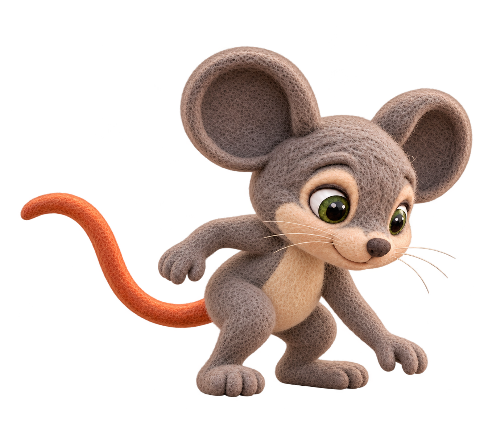
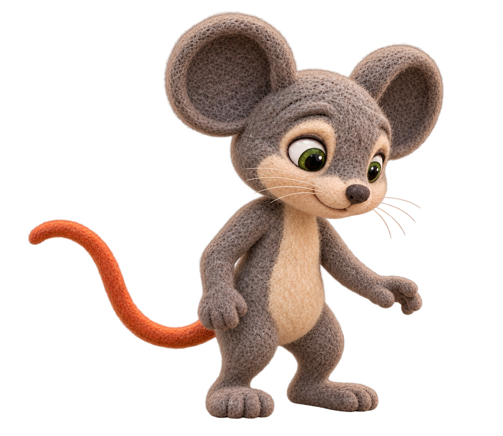

Berry proportion reference

Rejected seed r003

Seed r004 — owner-selected for performance

Native output inspected: torso more upright and upper chest more visible than rejected r003, shallow bent knees and lowered open hand. Full ears, feet and tail retained; closed mouth and no visible teeth. Downward head angle still partly hides the neck; proportion match and visual acceptance remain owner-review decisions, not measured or certified.
One authorized request; no retries. Other passed poses unchanged. Source images remain untouched.
Owner passed r004: performance use only; scene approval remains separate. Technical observations above are retained as review history.

